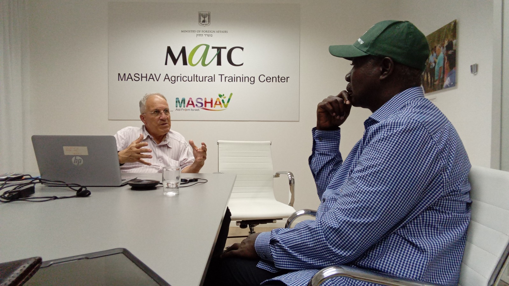
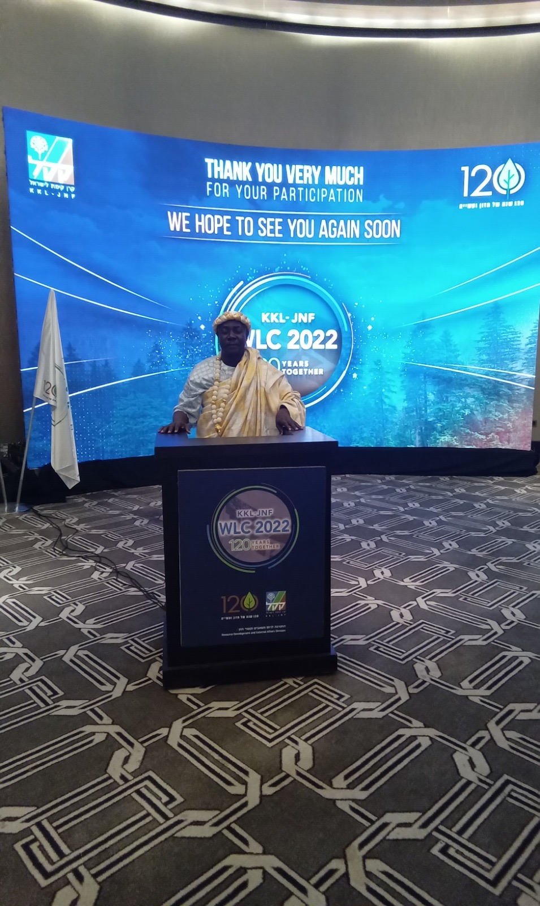
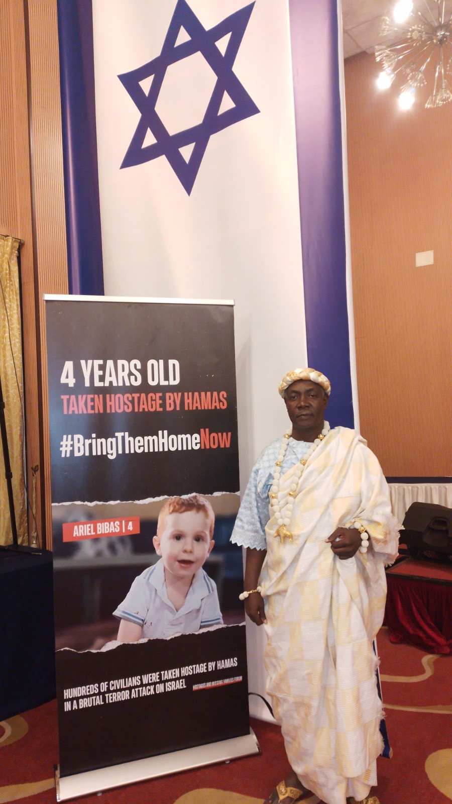
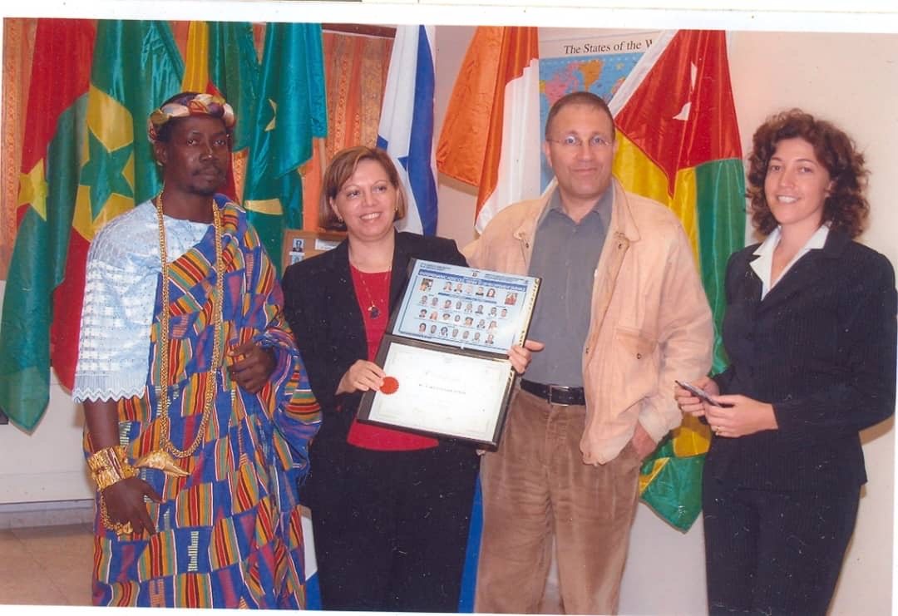
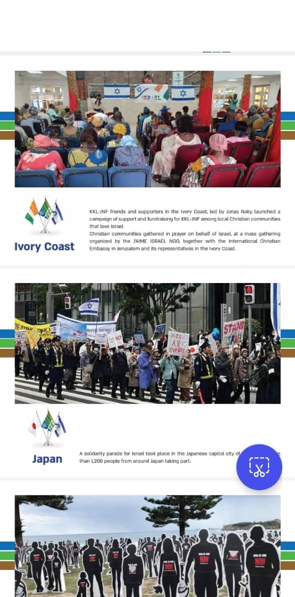

11 au 17 Mai 2026 — Tel Aviv, Israël · 7 jours d'immersion stratégique
La tenue traditionnelle africaine est requise lors des sessions officielles pour affirmer l'identité culturelle et la fierté de nos peuples.
Atterrissage à l'aéroport international Ben Gourion. Accueil protocolaire des 50 décideurs de la délégation africaine. Transfert vers l'hôtel officiel du Sommet à Tel Aviv.
La journée centrale du Sommet. Sessions plénières, signatures d'accords, networking de haut niveau. C'est ici que les engagements concrets sont pris.
Le Sommet 2026 n'est pas une conférence de plus. C'est un mécanisme de transformation concret qui produira des résultats mesurables.
Des MOU signés entre décideurs africains et innovateurs israéliens. Chaque accord est suivi d'un plan d'exécution à 12 mois avec des indicateurs mesurables.
Un comité de suivi permanent accompagne la mise en œuvre. Les 500+ membres du réseau restent connectés et actifs toute l'année via des points d'étape trimestriels.
Des programmes de déploiement lancés dans les mois qui suivent, avec formation locale et accompagnement technique. Autonomie des équipes africaines en 24 mois.




